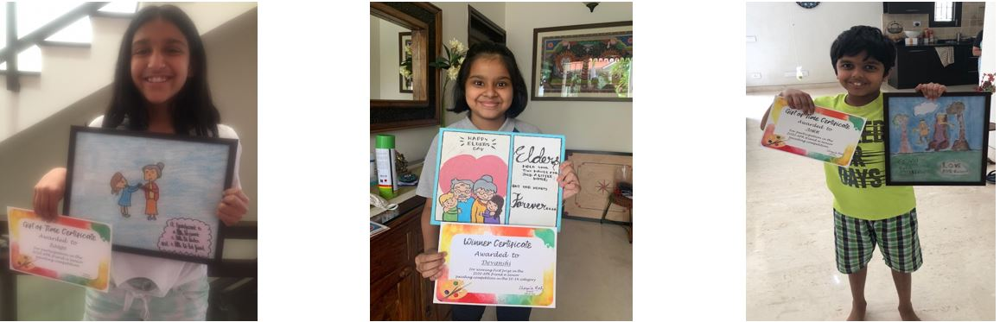
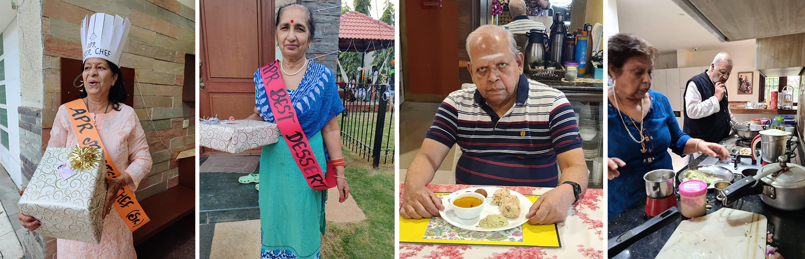
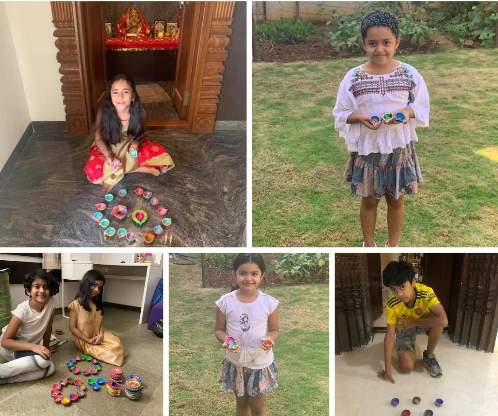

Navigation
Programs
Events
Team
Contact
Sent out a message asking for kids who could volunteer and made a list of grandparents in every lane. The kids then got together and made personalized greeting cards which were distributed along with Gerbera flowers.
"Kids were simply superb & thoughtful for the elderly parents & my parents were happy to receive the lovely flowers....thank you!"
"Kids really enjoyed delivering the surprise to grand parents!! A very thoughtful initiative."
"The gesture by kids and all those who organized this is highly appreciated . Bringing love to grand parents is such a noble thought. My parents were so happy."
"Smile on their faces is something that made his day! God bless you Sharmila for initiating this!"
"Kudos to all kids and adults who planned this loving gesture! My dad was overwhelmed! Thanks a lot."
During this event, we decided to spread the message for kids to paint something for grandparents. Then, we, Gift of Time, collected these paintings and laminated them and presented them to the fabulous senior citizens of APR.
Children with the beautiful paintings in their hands along with a certificate of participation.
The amazing senior citizens holding the paintings made by the children.
Every month we felicitate around 200 seniors in our community. In November it’s a cooking competition and a Diwali surprise in store. We have around 10-15 APR Friend a senior kiddy volunteers who jump in and help us execute these senior smileys every month. This month Kripa Kothari had a lovely idea to conduct a cooking competition and we had a Wonderful feast set out by our seniors in Adarsh Palm Retreat - over 15 dishes and participants to give us 4 wonderful masterchefs! We even had 2 male chefs! Wonderfully executed and so much joy all around. So say hello to your APR Senior master chefs!
APR Master Chef overall - Ms. Veena - Shahi Tukda
APR best starter - Ms Pragnya - Handvo
APR best Mains - Ms Rekha Beri - Mediterranean Platter
APR best dessert - Pushpa Arora - Javde khi kheer
Congratulations to our wonderful APR master chefs - the entries were nothing short of a spectacular feast.
Many thanks to the senior chefs and families and a special thank you to the judge.
1. Mariott Chef, Krishnan
2. Mr. Shyam
3. Resident youtube superstar Priya Taparia
Our little GOT kiddy volunteers painted over 1000 diyas for 200 seniors and wished them a very happy diwali.
Children displaying their beautiful hand painted diyas.
Over 50 kiddy volunteers volunteers brought Christmas cheer to our lane residents in APR.
Helped by our lane elves, the community raised money to fund APR Friend a Senior for 200 seniors for the first 6 months of 2021.